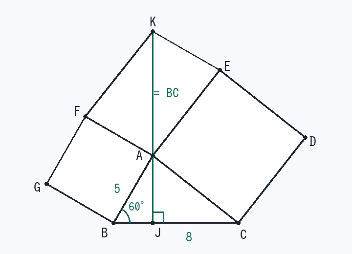

第3回 正方形2つと七角形の面積（合同の証明つき）
三角形 ABC において、四角形 BAFG は辺 AB を1辺とする正方形、四角形 CDEA は辺 AC を1辺とする正方形である。A から辺 BC に垂線をひき、BC との交点を J、線分 JA を A の方向にのばした直線上に AK = BC となる点 K をとる。
(1) △FAK ≡ △EKA を証明せよ。
(2) AB = 5 cm、BC = 8 cm、∠ABC = 60° のとき、七角形 BCDEKFG の面積を求めよ。
(1) △FAK ≡ △EKA を証明せよ。
(2) AB = 5 cm、BC = 8 cm、∠ABC = 60° のとき、七角形 BCDEKFG の面積を求めよ。

解法の型
正方形つきの図で「合同を示せ」→ 材料は「正方形の等辺」「正方形の90°」「垂線の90°」の3つだけ。90°を足し引きして等しい角を作る。
面積は、頂点から切り分けて、合同な三角形を数える。
(1) の証明
- 等しい辺を書き込むFA = AB（正方形 BAFG） AE = AC（正方形 CDEA） AK = BC（条件）
- ∠FAK = ∠ABC を出す
∠BAJ = 90° − ∠ABC（△ABJ は直角三角形）
∠BAK = 180° − ∠BAJ = 90° + ∠ABC（K は JA の延長上）
∠FAK = ∠BAK − ∠BAF = (90° + ∠ABC) − 90° = ∠ABC - △FAK ≡ △ABC（2辺とその間の角）FA = AB、AK = BC、∠FAK = ∠ABC → KF = AC
- 反対側も同じ∠EAK = ∠CAK − ∠CAE = (90° + ∠ACB) − 90° = ∠ACB
AE = CA、AK = CB → △EAK ≡ △CAB → EK = AB - 3辺を並べて結論
△FAK：FA = AB、AK、KF = AC
△EKA：EK = AB、KA、AE = AC
3辺がそれぞれ等しい → △FAK ≡ △EKA （証明終）
(2) の計算
- 七角形を A から切り分ける
七角形 = 正方形BAFG + 正方形CDEA + △ABC + △AEK + △AKF
(1) より △AEK ≡ △AKF ≡ △ABC なので、面積は △ABC の3つ分になります。
七角形 = AB² + AC² + 3 × △ABC - AC² を出す（√は開かない）∠ABC = 60°、AB = 5 → BJ = 2.5、AJ = 2.5√3、JC = 8 − 2.5 = 5.5
AC² = (2.5√3)² + 5.5² = 18.75 + 30.25 = 49 - △ABC の面積S = ½ × 8 × 2.5√3 = 10√3
- 合計するAB² + AC² = 25 + 49 = 74 3 × 10√3 = 30√3
七角形 BCDEKFG = 74 + 30√3 (cm²)
検算：正方形だけで 74、三角形3つ分が約52。合計 約126 で、図の大きさと合います。内訳を声に出すと足し忘れがすぐ見つかります。
覚えるべきこと（在庫に入れる1行）
正方形の90°を足し引きして等しい角を作る／面積は頂点から切り分けて合同な三角形を数える
類題（翌日、何も見ずに）
- 同じ図で、△AEF（正方形の間にできる三角形）の面積は △ABC と比べてどうか。
答え
∠EAF = 360° − 90° − 90° − ∠BAC = 180° − ∠BAC なので sin が等しく、½·AF·AE·sin∠EAF = ½·AB·AC·sin∠BAC。つまり △ABC と等しい。
- AB = 4、BC = 6、∠ABC = 90° のときの七角形の面積。
答え
AC² = 16 + 36 = 52、△ABC = 12 なので 16 + 52 + 36 = 104 cm²
← 第2回 三平方の定理と垂線 ｜ 第4回 直交する2弦と網目部分の面積 → ｜ 高校受験数学の一覧に戻る
動画の音声ナレーション
解説の全文を読む
- こんにちは。知多丸の落ちこぼれ救済チャンネルです。難関大学に合格して、錯覚資産を手に入れて、一流企業に入社しよう。今日は図形の証明と面積、入試の大問そのものです。三角形エービーシー の外側に、辺エービー を1辺とする正方形 ビーエーエフジー と、辺エーシー を1辺とする正方形 シーディーイーエー をかきます。エー から辺ビーシー に垂線をひいて、交点を ジェー。線分 ジェーエー を エー の方向にのばした直線上に、エーケー が ビーシー と等しくなる点 ケー をとります。
- 証明の型はこれです。合同を示せと言われたら、まず対応する辺と角を、問題の条件から1つずつ集める。今回は、正方形から出る「辺が等しい」と「90度」、それに垂線の90度。この3つしか材料はありません。だから、迷わないんです。
- 手順1。まず、辺の長さを書き込みます。正方形 ビーエーエフジー より、エフエー は エービー と等しい。正方形 シーディーイーエー より、エーイー は エーシー と等しい。そして条件より、エーケー は ビーシー と等しい。この3つが出発点です。
- 手順2。角を出します。直角三角形 エービージェー で、角ビーエージェー は、90度 引く 角ビー。ケー は ジェーエー の延長上ですから、角ビーエーケー は、180度 から それを引いて、90度 足す 角ビー。ここから、角エフエーケー は、角ビーエーケー から 角ビーエーエフ の 90度 を引いて、ちょうど 角ビー、つまり 角エービーシー と等しくなります。
- 手順3。だから、三角形エフエーケー と 三角形エービーシー は、2辺とその間の角がそれぞれ等しく、合同です。エフエー が エービー、エーケー が ビーシー、はさむ角が 角ビー。したがって、残りの辺 ケーエフ も、エーシー と等しくなります。
- 手順4。まったく同じことを、もう一方の正方形でやります。角エーシービー を シー とすると、角シーエーケー は 90度 足す シー。正方形の 角イーエーシー の 90度 を引いて、角イーエーケー は シー。よって、三角形イーエーケー と 三角形シーエービー が合同で、イーケー は エービー と等しくなります。
- 手順5。ここで、2つの三角形の3辺を並べます。三角形エフエーケー は、エフエー が エービー、エーケー、ケーエフ が エーシー。三角形イーケーエー は、イーケー が エービー、ケーエー、エーイー が エーシー。3辺がそれぞれ等しいので、三角形エフエーケー と 三角形イーケーエー は合同です。これで、1番は証明できました。
- 2番です。面積の型は、切り分け。七角形を、エー から線をひいて分けます。正方形が2つ、真ん中に 三角形エービーシー、そして 三角形エーイーケー と 三角形エーケーエフ。この2つは、さっき示したとおり 三角形エービーシー と合同ですから、面積も同じ。つまり、三角形エービーシー の面積の3つ分と、正方形2つ分の和になります。
- 手順1。エーシー の2乗 を、余弦定理でなく、垂線で出します。角ビー が 60度、エービー が 5 ですから、ビージェー は 2.5、エージェー は 2.5ルート3。すると ジェーシー は 8 引く 2.5 で 5.5。よって エーシー の2乗 は、2.5ルート3 の2乗 足す 5.5の2乗、18.75 足す 30.25 で、49。エーシー の2乗 のままでよいので、ルートは開きません。
- 手順2。三角形エービーシー の面積です。底辺 ビーシー が 8、高さ エージェー が 2.5ルート3。2分の1 かける 8 かける 2.5ルート3 で、10ルート3。
- 手順3。足し合わせます。正方形が 25 と 49 で、74。三角形が 10ルート3 の3つ分で、30ルート3。よって、七角形 ビーシーディーイーケーエフジー の面積は、74 足す 30ルート3 平方センチメートル。これが答えです。
- 検算です。正方形2つだけで 74。三角形3つ分は、だいたい 52 くらい。合わせて 126 くらいで、図の大きさと合います。もし正方形の面積を足し忘れていれば、けたが小さすぎるので、すぐ気づけます。
- 在庫に入れる1行です。正方形をつけた図で「合同を示せ」と来たら、正方形の 90度 を足すか引くかで、角を作る。面積は、頂点から切り分けて、合同な三角形を数える。この2行だけで、この形の入試問題はほぼ全部通ります。チャンネル登録をして、次の動画でも一緒に、要領よく積み上げていきましょう。